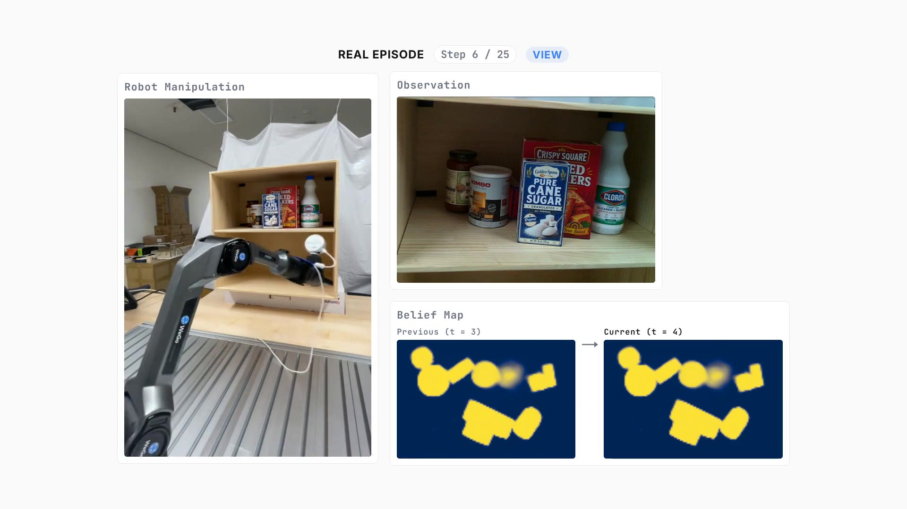

CoRL 2026 · Accepted
Learning Decomposed Visibility for Efficient Active Exploration of Cluttered Scenes
* Equal contribution.
DiVE explores cluttered scenes through observation and physical interaction. I implemented and benchmarked baselines and conducted real-world robot experiments.
Project page